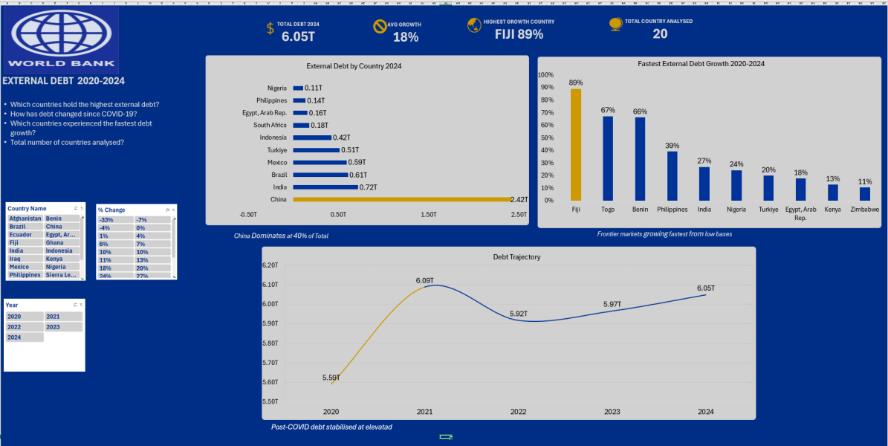

External Debt Analysis 2020-2024

Data Source:World Bank,World Development Indicators
Goals: To analyse how External Debt changed across 20 countries from 2020-2024,using World Bank data,and to find which countries hold the most debt and which grew fastest
Descriptions: This orojectanalyse external debt in 20 selected countries from 2020 to 2024,using World Bank World Development Indicators data(External debt stocks,total current US$).I kept only the years 2020 t0 2024 ,calculated each country's % chanhge as (2024-2020)/2020,and summarisded the results with PivotTables.I the built Excel dashboard showing the top debt holders,the fatest-growing countries,and how the combined debt of the 20 countries moved over the period.
Tools: Excel,PivotTable,Slicers,Power Query.
Result:
- Highest debt (2024):Among the 20 ountries,China held the most extenal debt at $2.42 trillion,about 40% of the 6.05 trillion total.India ($716bB),Brazil($605B),Mexico($591B) and Turkiye($515B) followed.These five held about 80% of the total.
- Change since COVID-19:The combined debt of the 20 countries was $5.599 trillion in 2020,peaked at 6.09 trilliom in 2021, and stood at 6.05 trillion in 2024 an increase of about 8%.
- Fatest growth(2020 to 2024):Fiji(+89), Togo(+67%) and Benin(+66%) grew faster in percentage terms, but from small starting amounts.Fiji's rise was abount 1.8 billion,while India's +27% added about $151 billion.
- Debt fell in some countries:Iraq(-33%),Ghana(-7%) and Mexico(-4%) owed less in 2024 than in 2020